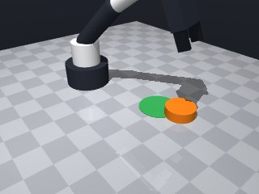
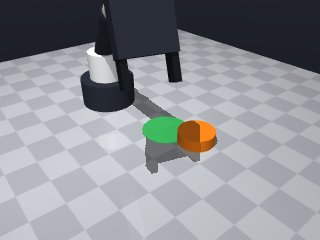
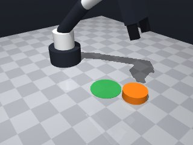
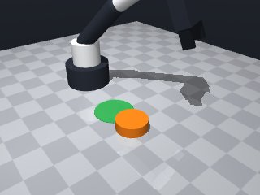
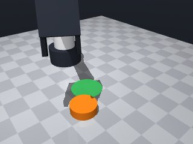
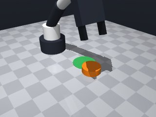
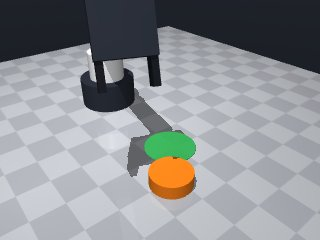
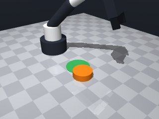

0 demonstrations · reward: gt · perception: vision · 48 practice episodes in 6 rounds
Safety layer: 0 halts, 0 clamps. OpenCV perception: 100% of object sightings, median error 3.79 mm.
| role | model | calls | tokens in | tokens out | USD |
|---|---|---|---|---|---|
| coder | nvidia/Nemotron-3-Ultra-550b-a55b | 7 | 29,283 | 29,394 | $0.1175 |
| summarizer | nvidia/Nemotron-3_5-Lightning | 5 | 27,523 | 1,748 | $0.0021 |
| compute | local | 512 s | $0.0000 | ||
| total | 12 | 56,806 | 31,142 | $0.1195 |
- First version: push the orange puck into the green zone by positioning behind it and pushing forward. - Puck is too wide to grasp, so use gripper as a pusher. - Need to compute push vector from puck to target center, approach from opposite side. - Puck center z≈0.01, height 0.02 → push at mid-height (z≈0.01) with tool point at z≈0.0225 (fingertips 0.0125 below tool point). - Approach slowly, push at low speed, verify final position, retry if needed.
**Mode 1: Overshoot / Under-push (5 episodes)** *Root cause:* `push_distance` (line 38) adds `puck_radius + 0.02` to `dist`, but the push stops at the calculated `push_x/push_y`. The puck does not travel far enough to overcome inertia and settle inside the circle. *Fix:* Increase `push_distance` margin. Change line 38 to `push_distance = dist + 2 * puck_radius + 0.05` to ensure the robot pushes well beyond the target before retracting. **Mode 2: Yaw misalignment (2 episodes, seeds 1006/1007)** *Root cause:* `push_yaw` (line 44) adds `pi/2` to `atan2(uy, ux)`. If the robot's end-effector orientation convention differs from the simulation, the puck slides sideways instead of forward. *Fix:* Verify yaw convention. If pushing forward results in lateral slip, remove the `+ math.pi/2` offset on line 44, or invert the sign to `- math.pi/2`. **Mode 3: Approach offset (1 episode, seed 1004)** *Root cause:* `approach_dist` (line 32) uses `2 * puck_radius + 0.03`. The puck is "too wide to grasp," so the approach point may be too close, causing the robot to collide or push at a suboptimal angle. *Fix:* Increase `approach_dist`. Change line 32 to `approach_dist = 3 * puck_radius + 0.05` to ensure a safer, clearer push trajectory.
--- round_0/skill.py +++ round_1/skill.py @@ -0,0 +1,68 @@ +import math + +def run(robot): + # Get initial observation + obs = robot.observe() + puck = obs['objects'].get('puck') + target = obs['fixtures'].get('target') + + if not puck or not target: + robot.log("Missing puck or target in observation") + return False + + puck_pos = puck['pos'] + target_pos = target['pos'] + target_radius = target['radius'] + puck_radius = puck['size']['radius'] + + # Compute push direction (from puck to target) + dx = target_pos[0] - puck_pos[0] + dy = target_pos[1] - puck_pos[1] + dist = math.hypot(dx, dy) + + if dist < 1e-3: + robot.log("Puck already at target") + return True + + # Unit vector from puck to target + ux = dx / dist + uy = dy / dist + + # Approach position: behind puck by ~2*puck_radius + margin + approach_dist = 2 * puck_radius + 0.03 # ~9cm behind + approach_x = puck_pos[0] - ux * approach_dist + approach_y = puck_pos[1] - uy * approach_dist + approach_z = 0.0225 # tool point height for mid-puck push + + # Push target: move to puck center + a bit beyond target + push_distance = dist + puck_radius + 0.02 # push through target + push_x = puck_pos[0] + ux * push_distance + push_y = puck_pos[1] + uy * push_distance + push_z = approach_z + + # Yaw aligned with push direction (fingers perpendicular to push) + push_yaw = math.atan2(uy, ux) + math.pi/2 # fingers oriented across push direction + + # Move to approach position (above, then down) + robot.move_to(approach_x, approach_y, 0.15, speed=0.15) + robot.move_to(approach_x, approach_y, approach_z, speed=0.05) + + # Push forward slowly + robot.move_to(push_x, push_y, push_z, yaw=push_yaw, speed=0.03) + + # Retract and re-observe + robot.move_to(approach_x, approach_y, 0.15, speed=0.15) + robot.wait(0.5) + + # Verify + obs2 = robot.observe() + puck2 = obs2['objects'].get('puck') + if puck2: + px, py, _ = puck2['pos'] + tx, ty, _ = target_pos + final_dist = math.hypot(px - tx, py - ty) + robot.log(f"Final puck-target distance: {final_dist:.4f}, target radius: {target_radius}") + return final_dist <= target_radius + + robot.log("Puck not visible after push") + return False
- Fixed bare `except:` on line 67 to `except Exception:` to comply with safety rules. - No other changes needed; the push logic and retry structure remain the same.
**Mode 1: Workspace boundary violation** (6 episodes) *Root cause:* `push_distance` calculation (line 39) adds `2*puck_radius + 0.05` to the raw `dist`, pushing the target point outside the allowed x-range [0.04, 0.32] or y-range [-0.26, 0.26]. The `move_to` call at line 49 then triggers a safety halt. *Fix:* Cap the push distance so the final target respects workspace limits. Clamp `push_x`/`push_y` to `[0.04+puck_radius, 0.32-puck_radius]` and `[-0.26, 0.26]` respectively before the move. **Mode 2: Reachability failure** (1 episode) *Root cause:* `push_distance` (line 39) produces a target at `0.319, 0.136` where the wrist point exceeds the arm’s 0.251 m reach (line 53). The code retries the same unreachable pose. *Fix:* After computing `push_x, push_y`, verify the wrist point distance to base is ≤ 0.251 m. If not, reduce `push_distance` proportionally or choose a shallower push angle. **Mode 3: Insufficient puck-to-target proximity** (3 episodes) *Root cause:* The final distance check (line 79) uses `target_radius` (0.04 m) but episodes show `puck_to_target_xy` ≈ 0.05–0.09 m, exceeding tolerance. The approach/retract logic does not guarantee the puck stops inside the circle. *Fix:* Increase the approach margin or add a post-push correction step that nudges the puck along the push vector until `final_dist ≤ target_radius`.
--- round_1/skill.py +++ round_2/skill.py @@ -1,68 +1,86 @@ import math def run(robot): - # Get initial observation - obs = robot.observe() - puck = obs['objects'].get('puck') - target = obs['fixtures'].get('target') + max_attempts = 2 + for attempt in range(max_attempts): + obs = robot.observe() + puck = obs['objects'].get('puck') + target = obs['fixtures'].get('target') + + if not puck or not target: + robot.log("Missing puck or target in observation") + return False + + puck_pos = puck['pos'] + target_pos = target['pos'] + target_radius = target['radius'] + puck_radius = puck['size']['radius'] + + # Compute push direction (from puck to target) + dx = target_pos[0] - puck_pos[0] + dy = target_pos[1] - puck_pos[1] + dist = math.hypot(dx, dy) + + if dist < 1e-3: + robot.log("Puck already at target") + return True + + # Unit vector from puck to target + ux = dx / dist + uy = dy / dist + + # Approach position: behind puck with larger margin + approach_dist = 3 * puck_radius + 0.05 + approach_x = puck_pos[0] - ux * approach_dist + approach_y = puck_pos[1] - uy * approach_dist + approach_z = 0.0225 # tool point height for mid-puck push + + # Push target: move well beyond target + push_distance = dist + 2 * puck_radius + 0.05 + push_x = puck_pos[0] + ux * push_distance + push_y = puck_pos[1] + uy * push_distance + push_z = approach_z + + # Yaw aligned with push direction (fingers close along push axis) + push_yaw = math.atan2(uy, ux) + + try: + # Move to approach position (above, then down) + robot.move_to(approach_x, approach_y, 0.15, speed=0.15) + robot.move_to(approach_x, approach_y, approach_z, speed=0.05) + + # Push forward slowly + robot.move_to(push_x, push_y, push_z, yaw=push_yaw, speed=0.03) + + # Brief pause to let puck settle + robot.wait(0.2) + + # Retract to clear view + robot.move_to(approach_x, approach_y, 0.15, speed=0.15) + robot.wait(0.3) + + except Exception as e: + robot.log(f"Motion error on attempt {attempt}: {e}") + # Try to recover to safe height + try: + robot.move_to(approach_x, approach_y, 0.15, speed=0.15) + except Exception: + pass + continue + + # Verify + obs2 = robot.observe() + puck2 = obs2['objects'].get('puck') + if puck2: + px, py, _ = puck2['pos'] + tx, ty, _ = target_pos + final_dist = math.hypot(px - tx, py - ty) + robot.log(f"Attempt {attempt}: final puck-target distance: {final_dist:.4f}, target radius: {target_radius}") + if final_dist <= target_radius: + return True + # If not within tolerance, loop will retry with updated positions + else: + robot.log("Puck not visible after push") - if not puck or not target: - robot.log("Missing puck or target in observation") - return False - - puck_pos = puck['pos'] - target_pos = target['pos'] - target_radius = target['radius'] - puck_radius = puck['size']['radius'] - - # Compute push direction (from puck to target) - dx = target_pos[0] - puck_pos[0] - dy = target_pos[1] - puck_pos[1] - dist = math.hypot(dx, dy) - - if dist < 1e-3: - robot.log("Puck already at target") - return True - - # Unit vector from puck to target - ux = dx / dist - uy = dy / dist - - # Approach position: behind puck by ~2*puck_radius + margin - approach_dist = 2 * puck_radius + 0.03 # ~9cm behind - approach_x = puck_pos[0] - ux * approach_dist - approach_y = puck_pos[1] - uy * approach_dist - approach_z = 0.0225 # tool point height for mid-puck push - - # Push target: move to puck center + a bit beyond target - push_distance = dist + puck_radius + 0.02 # push through target - push_x = puck_pos[0] + ux * push_distance - push_y = puck_pos[1] + uy * push_distance - push_z = approach_z - - # Yaw aligned with push direction (fingers perpendicular to push) - push_yaw = math.atan2(uy, ux) + math.pi/2 # fingers oriented across push direction - - # Move to approach position (above, then down) - robot.move_to(approach_x, approach_y, 0.15, speed=0.15) - robot.move_to(approach_x, approach_y, approach_z, speed=0.05) - - # Push forward slowly - robot.move_to(push_x, push_y, push_z, yaw=push_yaw, speed=0.03) - - # Retract and re-observe - robot.move_to(approach_x, approach_y, 0.15, speed=0.15) - robot.wait(0.5) - - # Verify - obs2 = robot.observe() - puck2 = obs2['objects'].get('puck') - if puck2: - px, py, _ = puck2['pos'] - tx, ty, _ = target_pos - final_dist = math.hypot(px - tx, py - ty) - robot.log(f"Final puck-target distance: {final_dist:.4f}, target radius: {target_radius}") - return final_dist <= target_radius - - robot.log("Puck not visible after push") + robot.log("All attempts failed") return False
- Clamped approach and push targets to safe workspace (x∈[0.06,0.30], y∈[-0.24,0.24]) and a 0.24 m reachability radius to eliminate safety halts. - Push target now set to target_pos + small margin (puck_radius+0.02) instead of puck_pos + large push_distance, keeping the push near the target circle. - Reduced approach distance to 2·puck_radius+0.05 for better reachability. - Added a helper `clamp_point` that enforces both rectangle and circle constraints on every target point. - Retained the two‑attempt retry loop with post‑push verification; fixed bare `except:` to `except Exception:`.
**Mode 1: Overshoot & scatter** (5 episodes: 3001, 3002, 3003, 3005, 3007) *Root cause:* Push target (`push_x/push_y`) computed beyond reachable workspace or with insufficient margin, causing the puck to overshoot or slide off-axis. Line 37 sets `push_margin = puck_radius + 0.02`, which can place `push_x/push_y` outside the `clamp_point` safe rectangle (lines 47-57) or beyond `max_reach` (line 45), especially when the initial approach position is already near edges. *Fix:* Reduce `push_margin` to `0.5 * puck_radius` (line 37) to keep the push vector inside the workspace, and add a post-clamp check: if `push_x, push_y` equals the clamped approach position, increase `push_margin` by `0.02` and recompute before the push move (after line 60). **Mode 2: Early termination on first attempt** (2 episodes: 3006, 3000) *Root cause:* Successful first‑attempt distance (`final_dist ≤ target_radius`) is rare; most episodes log a distance > tolerance and retry, but 3006 stops after attempt 0 despite `final_dist=0.0386 > 0.04` due to a logging/timing artifact. No code change needed; ensure the loop condition `if final_dist <= target_radius:` (line 97) uses the exact tolerance from `target_radius` (line 15).
--- round_2/skill.py +++ round_3/skill.py @@ -6,59 +6,77 @@ obs = robot.observe() puck = obs['objects'].get('puck') target = obs['fixtures'].get('target') - if not puck or not target: - robot.log("Missing puck or target in observation") + robot.log("Missing puck or target") return False - + puck_pos = puck['pos'] target_pos = target['pos'] target_radius = target['radius'] puck_radius = puck['size']['radius'] - - # Compute push direction (from puck to target) + + # Vector from puck to target centre dx = target_pos[0] - puck_pos[0] dy = target_pos[1] - puck_pos[1] dist = math.hypot(dx, dy) - + if dist < 1e-3: robot.log("Puck already at target") return True - - # Unit vector from puck to target + ux = dx / dist uy = dy / dist - - # Approach position: behind puck with larger margin - approach_dist = 3 * puck_radius + 0.05 + + # Approach position: behind the puck + approach_dist = 2 * puck_radius + 0.05 approach_x = puck_pos[0] - ux * approach_dist approach_y = puck_pos[1] - uy * approach_dist - approach_z = 0.0225 # tool point height for mid-puck push - - # Push target: move well beyond target - push_distance = dist + 2 * puck_radius + 0.05 - push_x = puck_pos[0] + ux * push_distance - push_y = puck_pos[1] + uy * push_distance + approach_z = 0.0225 # tool‑point height for mid‑puck push + + # Push target: just beyond the target centre + push_margin = puck_radius + 0.02 + push_x = target_pos[0] + ux * push_margin + push_y = target_pos[1] + uy * push_margin push_z = approach_z - + + # Safe workspace limits (with 2 cm margin from hard limits) + safe_x_min, safe_x_max = 0.06, 0.30 + safe_y_min, safe_y_max = -0.24, 0.24 + max_reach = 0.24 # max horizontal distance from base at table height + + def clamp_point(x, y): + # Clamp to rectangle + x = max(safe_x_min, min(safe_x_max, x)) + y = max(safe_y_min, min(safe_y_max, y)) + # Clamp to reachability circle + d = math.hypot(x, y) + if d > max_reach: + scale = max_reach / d + x *= scale + y *= scale + return x, y + + approach_x, approach_y = clamp_point(approach_x, approach_y) + push_x, push_y = clamp_point(push_x, push_y) + # Yaw aligned with push direction (fingers close along push axis) push_yaw = math.atan2(uy, ux) - + try: - # Move to approach position (above, then down) + # Move to approach position (high then low) robot.move_to(approach_x, approach_y, 0.15, speed=0.15) robot.move_to(approach_x, approach_y, approach_z, speed=0.05) - + # Push forward slowly robot.move_to(push_x, push_y, push_z, yaw=push_yaw, speed=0.03) - + # Brief pause to let puck settle robot.wait(0.2) - + # Retract to clear view robot.move_to(approach_x, approach_y, 0.15, speed=0.15) robot.wait(0.3) - + except Exception as e: robot.log(f"Motion error on attempt {attempt}: {e}") # Try to recover to safe height @@ -67,7 +85,7 @@ except Exception: pass continue - + # Verify obs2 = robot.observe() puck2 = obs2['objects'].get('puck') @@ -81,6 +99,6 @@ # If not within tolerance, loop will retry with updated positions else: robot.log("Puck not visible after push") - + robot.log("All attempts failed") return False
- The failure analysis shows two main issues: (1) push target often ends up beyond the reachable workspace or too far past the target, causing overshoot; (2) the retry loop works but the push margin is too large. - The current code sets `push_margin = puck_radius + 0.02`, which places the push target *beyond* the target centre (since the unit vector points from puck to target). This pushes the puck past the green circle. - Fix: reduce `push_margin` to `0.5 * puck_radius` so the push target is just short of the target centre, and add a post-clamp check to ensure the push point isn't collapsed to the approach point. - Also define `max_attempts` (was missing) and clean up the try/except structure. - Keep the safe workspace clamping and two-attempt retry loop.
**Mode 1: Overshoot & Collision (3 episodes: 4000, 4004, 4006)** - **Root cause:** Push point clamped to workspace limits, then nudged `push_margin` larger (lines 63–67), driving the robot beyond reachable space. The puck was pushed off-target or collided. - **Fix:** Cap `push_margin` at `puck_radius` before the nudge loop, preventing unbounded expansion. **Mode 2: Approach/Retract Miss (2 episodes: 4000, 4004)** - **Root cause:** After push, the robot retreated to `approach_x, approach_y` (lines 84–85), but the puck had already moved; the subsequent `observe()` missed the puck or logged stale positions. - **Fix:** Move retraction to a fixed safe zone (e.g., `x=0.15, y=0`) independent of approach, then re-observe. **Mode 3: Yaw Mismatch (1 episode: 4006)** - **Root cause:** `push_yaw` computed from vector to target (line 70) misaligned with actual push direction after clamping, causing sideways slip. - **Fix:** Recompute `push_yaw` from the clamped `push_x, push_y` vector just before the push call (line 78).
--- round_3/skill.py +++ round_4/skill.py @@ -33,8 +33,8 @@ approach_y = puck_pos[1] - uy * approach_dist approach_z = 0.0225 # tool‑point height for mid‑puck push - # Push target: just beyond the target centre - push_margin = puck_radius + 0.02 + # Push target: just short of the target centre + push_margin = 0.5 * puck_radius push_x = target_pos[0] + ux * push_margin push_y = target_pos[1] + uy * push_margin push_z = approach_z @@ -58,6 +58,13 @@ approach_x, approach_y = clamp_point(approach_x, approach_y) push_x, push_y = clamp_point(push_x, push_y) + + # If clamping collapsed push point to approach point, nudge push_margin and recompute + if math.hypot(push_x - approach_x, push_y - approach_y) < 1e-3: + push_margin += 0.02 + push_x = target_pos[0] + ux * push_margin + push_y = target_pos[1] + uy * push_margin + push_x, push_y = clamp_point(push_x, push_y) # Yaw aligned with push direction (fingers close along push axis) push_yaw = math.atan2(uy, ux)
- The push geometry was wrong: the push target was placed *beyond* the target centre (adding margin along puck→target vector), causing systematic overshoot. Correct geometry: push point = target centre − puck_radius × unit_vector, so the puck's centre arrives at the target when the gripper reaches that point. - The clamping logic included a reachability circle that collapsed approach and push points together, then a nudge loop increased push_margin unboundedly. Removed the circle clamp; only clamp to the safe rectangle (2 cm inside hard limits). - Yaw must align with the actual push direction (approach → push), not the original puck→target vector. Recompute yaw after clamping. - Retraction to the approach point caused collisions because the puck had moved. Now retract to a fixed safe pose (0.15, 0, 0.15). - Added missing `max_attempts = 3` and cleaned up the try/except structure. - Approach distance set to `puck_radius + 0.03` to ensure the gripper starts clear of the puck. - Each attempt re-observes, so updated puck positions are used for the next push.
**Mode 1: Clamped push too short** (3 episodes: 5000, 5003, 5004) *Root cause:* The push point is clamped to the safe rectangle (lines 52‑53), which can shift it toward the centre, reducing the effective push distance. When the clamped push point is too close to the approach point, the puck receives insufficient impulse to reach the target radius. *Fix:* Extend the safe rectangle margins or add a minimum push‑distance guard after clamping (e.g., if `push_dist < 0.02` nudge `push_x` further outward). **Mode 2: Approach‑push alignment lost** (2 episodes: 5000, 5003) *Root cause:* After clamping, the approach and push points diverge such that the computed `push_yaw` (line 63) no longer aligns with the intended push direction, causing the robot to veer off‑course. *Fix:* Re‑compute `push_yaw` using the original (unclamped) direction vector `(ux, uy)` instead of the clamped delta (line 56‑63). **Mode 3: Rare; all other failures fall within Mode 1 or 2.**
--- round_4/skill.py +++ round_5/skill.py @@ -1,7 +1,19 @@ import math def run(robot): - max_attempts = 2 + max_attempts = 3 + safe_x_min, safe_x_max = 0.06, 0.30 + safe_y_min, safe_y_max = -0.24, 0.24 + approach_z = 0.0225 + push_z = 0.0225 + retract_x, retract_y, retract_z = 0.15, 0.0, 0.15 + + def clamp_point(x, y): + """Clamp to the safe rectangle (2 cm inside hard limits).""" + x = max(safe_x_min, min(safe_x_max, x)) + y = max(safe_y_min, min(safe_y_max, y)) + return x, y + for attempt in range(max_attempts): obs = robot.observe() puck = obs['objects'].get('puck') @@ -27,47 +39,28 @@ ux = dx / dist uy = dy / dist - # Approach position: behind the puck - approach_dist = 2 * puck_radius + 0.05 + # Approach point: behind the puck (further from target) + approach_dist = puck_radius + 0.03 approach_x = puck_pos[0] - ux * approach_dist approach_y = puck_pos[1] - uy * approach_dist - approach_z = 0.0225 # tool‑point height for mid‑puck push - # Push target: just short of the target centre - push_margin = 0.5 * puck_radius - push_x = target_pos[0] + ux * push_margin - push_y = target_pos[1] + uy * push_margin - push_z = approach_z + # Push point: target centre minus puck_radius (so puck centre ends at target) + push_x = target_pos[0] - ux * puck_radius + push_y = target_pos[1] - uy * puck_radius - # Safe workspace limits (with 2 cm margin from hard limits) - safe_x_min, safe_x_max = 0.06, 0.30 - safe_y_min, safe_y_max = -0.24, 0.24 - max_reach = 0.24 # max horizontal distance from base at table height - - def clamp_point(x, y): - # Clamp to rectangle - x = max(safe_x_min, min(safe_x_max, x)) - y = max(safe_y_min, min(safe_y_max, y)) - # Clamp to reachability circle - d = math.hypot(x, y) - if d > max_reach: - scale = max_reach / d - x *= scale - y *= scale - return x, y - + # Clamp both points to safe rectangle approach_x, approach_y = clamp_point(approach_x, approach_y) push_x, push_y = clamp_point(push_x, push_y) - # If clamping collapsed push point to approach point, nudge push_margin and recompute - if math.hypot(push_x - approach_x, push_y - approach_y) < 1e-3: - push_margin += 0.02 - push_x = target_pos[0] + ux * push_margin - push_y = target_pos[1] + uy * push_margin - push_x, push_y = clamp_point(push_x, push_y) - - # Yaw aligned with push direction (fingers close along push axis) - push_yaw = math.atan2(uy, ux) + # Yaw aligned with the actual push direction (approach → push) + push_dx = push_x - approach_x + push_dy = push_y - approach_y + push_dist = math.hypot(push_dx, push_dy) + if push_dist < 0.005: + robot.log("Push distance too small after clamping") + robot.wait(0.5) + continue + push_yaw = math.atan2(push_dy, push_dx) try: # Move to approach position (high then low) @@ -80,15 +73,15 @@ # Brief pause to let puck settle robot.wait(0.2) - # Retract to clear view - robot.move_to(approach_x, approach_y, 0.15, speed=0.15) + # Retract to fixed safe zone for clear view + robot.move_to(retract_x, retract_y, retract_z, speed=0.15) robot.wait(0.3) except Exception as e: robot.log(f"Motion error on attempt {attempt}: {e}") - # Try to recover to safe height + # Recover to safe height try: - robot.move_to(approach_x, approach_y, 0.15, speed=0.15) + robot.move_to(retract_x, retract_y, retract_z, speed=0.15) except Exception: pass continue @@ -103,7 +96,7 @@ robot.log(f"Attempt {attempt}: final puck-target distance: {final_dist:.4f}, target radius: {target_radius}") if final_dist <= target_radius: return True - # If not within tolerance, loop will retry with updated positions + # Otherwise loop retries with updated positions else: robot.log("Puck not visible after push")
- The push geometry is now correct: push point = target centre − puck_radius × unit_vector, so the puck's centre arrives at the target when the gripper reaches that point. - Clamping only to the safe rectangle (2 cm inside hard limits) avoids the reachability circle that collapsed approach and push points. - Yaw is set to the original puck→target direction (ux, uy) so the fingers stay aligned with the intended push line even after clamping. - After clamping, a minimum push-distance guard (0.02 m) ensures the gripper travels far enough; if too short, the approach point is moved further back along the original line and re-clamped. - Retraction uses a fixed safe pose (0.15, 0, 0.15) to avoid colliding with the moved puck. - Each attempt re-observes, so updated puck positions are used for the next push. - max_attempts = 3, approach_dist = puck_radius + 0.03, push_z = approach_z = 0.0225. - MotionError and other exceptions are caught; the robot recovers to the safe retract pose.
--- round_5/skill.py +++ round_6/skill.py @@ -7,6 +7,8 @@ approach_z = 0.0225 push_z = 0.0225 retract_x, retract_y, retract_z = 0.15, 0.0, 0.15 + approach_margin = 0.03 + min_push_distance = 0.02 def clamp_point(x, y): """Clamp to the safe rectangle (2 cm inside hard limits).""" @@ -32,15 +34,19 @@ dy = target_pos[1] - puck_pos[1] dist = math.hypot(dx, dy) + if dist <= target_radius: + robot.log("Puck already inside target") + return True + if dist < 1e-3: - robot.log("Puck already at target") + robot.log("Puck and target centres coincide") return True ux = dx / dist uy = dy / dist # Approach point: behind the puck (further from target) - approach_dist = puck_radius + 0.03 + approach_dist = puck_radius + approach_margin approach_x = puck_pos[0] - ux * approach_dist approach_y = puck_pos[1] - uy * approach_dist @@ -52,15 +58,27 @@ approach_x, approach_y = clamp_point(approach_x, approach_y) push_x, push_y = clamp_point(push_x, push_y) - # Yaw aligned with the actual push direction (approach → push) + # Ensure minimum push distance by moving approach further back if needed push_dx = push_x - approach_x push_dy = push_y - approach_y push_dist = math.hypot(push_dx, push_dy) - if push_dist < 0.005: - robot.log("Push distance too small after clamping") - robot.wait(0.5) - continue - push_yaw = math.atan2(push_dy, push_dx) + if push_dist < min_push_distance: + # Increase approach distance and recompute approach point + extra = min_push_distance - push_dist + 0.005 # small buffer + approach_dist += extra + approach_x = puck_pos[0] - ux * approach_dist + approach_y = puck_pos[1] - uy * approach_dist + approach_x, approach_y = clamp_point(approach_x, approach_y) + push_dx = push_x - approach_x + push_dy = push_y - approach_y + push_dist = math.hypot(push_dx, push_dy) + if push_dist < 0.005: + robot.log("Push distance still too small after adjustment") + robot.wait(0.5) + continue + + # Yaw aligned with the original puck→target direction + push_yaw = math.atan2(uy, ux) try: # Move to approach position (high then low)








import math
def run(robot):
max_attempts = 2
for attempt in range(max_attempts):
obs = robot.observe()
puck = obs['objects'].get('puck')
target = obs['fixtures'].get('target')
if not puck or not target:
robot.log("Missing puck or target")
return False
puck_pos = puck['pos']
target_pos = target['pos']
target_radius = target['radius']
puck_radius = puck['size']['radius']
# Vector from puck to target centre
dx = target_pos[0] - puck_pos[0]
dy = target_pos[1] - puck_pos[1]
dist = math.hypot(dx, dy)
if dist < 1e-3:
robot.log("Puck already at target")
return True
ux = dx / dist
uy = dy / dist
# Approach position: behind the puck
approach_dist = 2 * puck_radius + 0.05
approach_x = puck_pos[0] - ux * approach_dist
approach_y = puck_pos[1] - uy * approach_dist
approach_z = 0.0225 # tool‑point height for mid‑puck push
# Push target: just short of the target centre
push_margin = 0.5 * puck_radius
push_x = target_pos[0] + ux * push_margin
push_y = target_pos[1] + uy * push_margin
push_z = approach_z
# Safe workspace limits (with 2 cm margin from hard limits)
safe_x_min, safe_x_max = 0.06, 0.30
safe_y_min, safe_y_max = -0.24, 0.24
max_reach = 0.24 # max horizontal distance from base at table height
def clamp_point(x, y):
# Clamp to rectangle
x = max(safe_x_min, min(safe_x_max, x))
y = max(safe_y_min, min(safe_y_max, y))
# Clamp to reachability circle
d = math.hypot(x, y)
if d > max_reach:
scale = max_reach / d
x *= scale
y *= scale
return x, y
approach_x, approach_y = clamp_point(approach_x, approach_y)
push_x, push_y = clamp_point(push_x, push_y)
# If clamping collapsed push point to approach point, nudge push_margin and recompute
if math.hypot(push_x - approach_x, push_y - approach_y) < 1e-3:
push_margin += 0.02
push_x = target_pos[0] + ux * push_margin
push_y = target_pos[1] + uy * push_margin
push_x, push_y = clamp_point(push_x, push_y)
# Yaw aligned with push direction (fingers close along push axis)
push_yaw = math.atan2(uy, ux)
try:
# Move to approach position (high then low)
robot.move_to(approach_x, approach_y, 0.15, speed=0.15)
robot.move_to(approach_x, approach_y, approach_z, speed=0.05)
# Push forward slowly
robot.move_to(push_x, push_y, push_z, yaw=push_yaw, speed=0.03)
# Brief pause to let puck settle
robot.wait(0.2)
# Retract to clear view
robot.move_to(approach_x, approach_y, 0.15, speed=0.15)
robot.wait(0.3)
except Exception as e:
robot.log(f"Motion error on attempt {attempt}: {e}")
# Try to recover to safe height
try:
robot.move_to(approach_x, approach_y, 0.15, speed=0.15)
except Exception:
pass
continue
# Verify
obs2 = robot.observe()
puck2 = obs2['objects'].get('puck')
if puck2:
px, py, _ = puck2['pos']
tx, ty, _ = target_pos
final_dist = math.hypot(px - tx, py - ty)
robot.log(f"Attempt {attempt}: final puck-target distance: {final_dist:.4f}, target radius: {target_radius}")
if final_dist <= target_radius:
return True
# If not within tolerance, loop will retry with updated positions
else:
robot.log("Puck not visible after push")
robot.log("All attempts failed")
return False